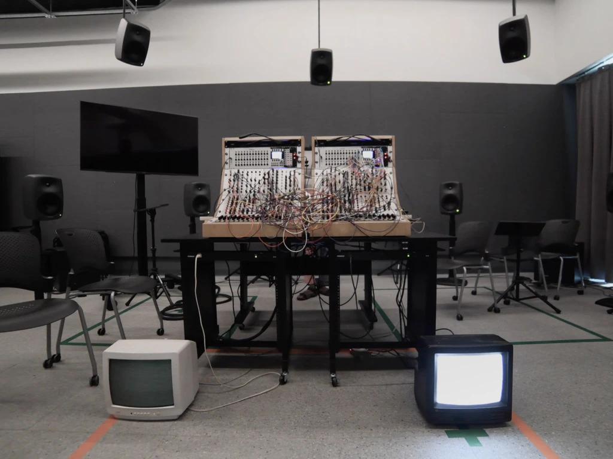

Characters

Performance for Sound Synthesis Spring 2021
This performance took place in the SRST at RISD in May of 2021.
I focused on creating immersive and complex textures with the Serge, emphasizing a concept of maximality through feedback paths and cross-modulation of signals (feeding back through wave multipliers and cross-patching oscillators via frequency modulation inputs). Rather than relying on random sources such as noise or sample-and-hold, I used these feedback-based strategies to maintain greater control over the overall patch. This approach allowed the individual sonic elements to communicate more coherently and efficiently, establishing a balance between chaos and each sound’s primary identity. I also prioritized giving each sound its own defined spectral and spatial space in order to prevent the patch from becoming overly dense.
For my final project, I focused on the idea of characters and the synthesis of organic, controlled randomness. I used two CRT televisions as visual representations of these characters: one visualized the Serge analog synthesizer, and the other visualized SuperCollider, illustrating the dialogue between analog and digital systems. I performed the patch live, as I found it essential to engage with these interacting systems in real time through improvisation.
In terms of compositional strategy, I developed the patch over several days prior to performance in order to enable a more controlled live execution. I used Max/MSP to route audio directly to specific speakers within a spatial array. I also routed audio signals into the video inputs of CRT televisions to generate scan-line and interference patterns, creating a data-matrix-like visual aesthetic. Different elements of the patch were distributed between the two screens, reinforcing the concept of distinct sonic characters engaged in ongoing audiovisual conversation through oscillation and feedback.